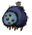
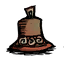

| Glommer's Flower | |
| |
|
| 6 days (after death of Glommer) | |
| Perk | Turns  into a follower. |
| Fuel Value | 90 sec (only when spoiling) |
| Dropped by | |
| Stacks up to | Does not stack |
| DebugSpawn | "glommerflower" |
| “ | A wönder öf the wööds. | ” |
| –Wigfrid | ||
Glommer's Flower is an item found in the "Reign of Giants" DLC. It is obtained on the night of a full moon at Glommer's Statue where it will bloom, emitting light. Picking the flower will make the Glommer that spawned nearby follow you as long as you keep it in your inventory, much like Chester. It can be used to craft the Old Bell and it is renewable, even if the statue is destroyed.
Killing the Glommer which follows the Flower will cause it to spoil, making it a fuel item which can be used for fires or the Ice Flingomatic.
Dropping the Flower on the ground or leaving it in a stationary container will cause any following Glommer to stand by that location. If the Flower is put inside Chester, Glommer will start following Chester instead.
 |
|  |